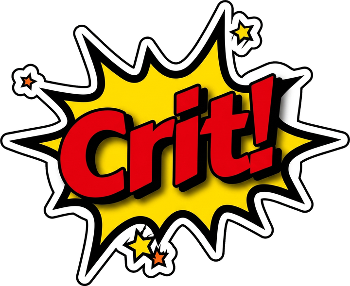

Podešavanje računara
Adresa servera (IP glavnog računara)
Token računara
Sačuvaj i poveži
Adresu i token nađeš u panelu, u delovima
Podešavanja
i
Računari
.
Povezivanje sa serverom...
Vreme ti se ne troši dok nema veze.
Sesija te čeka i nastavlja se čim se veza vrati.
Server se ne javlja. Proveri da li je pokrenut na glavnom računaru i da li je adresa tačno uneta.
Promeni adresu servera
Cena po satu
-
Računar
-
Prijava
Korisničko ime
Lozinka
Prijavi se
Nalog i dopunu kredita radiš na kasi, kod osoblja.
Početna
Shop
Nalog
Igrač
-
Kredit
-
Preostalo
--:--
Odjava
PC
--:--
Server
Internet
CPU -
RAM -
temp -
Računar je zaključan
Pozovite osoblje da otključa računar.
Otključaj
Osoblje: Ctrl + Alt + U
Poruka osoblja
U redu
Odjava sa računara
Sesija se završava, a preostali kredit ostaje na nalogu za sledeći put.
Otkaži
Odjavi me
Unesite PIN
Otkaži
Potvrdi
Nagradni točak
Sistem spreman